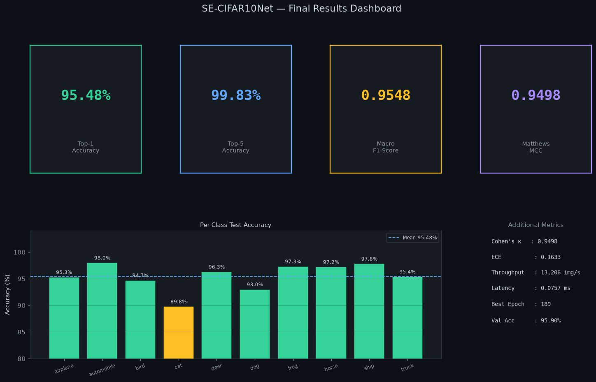
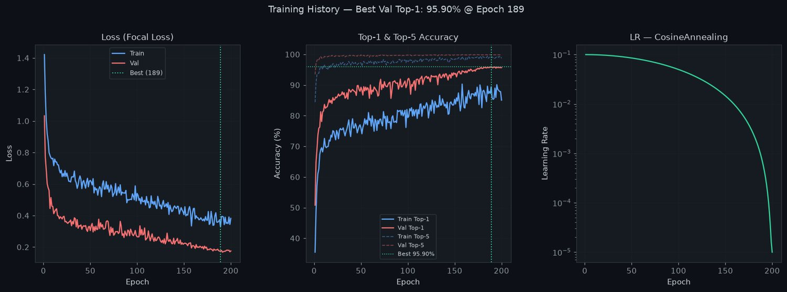
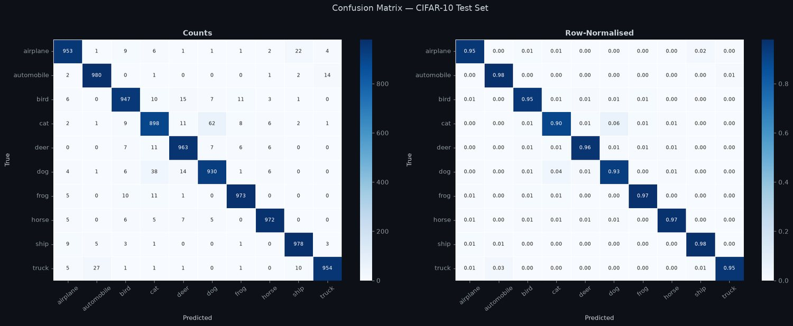
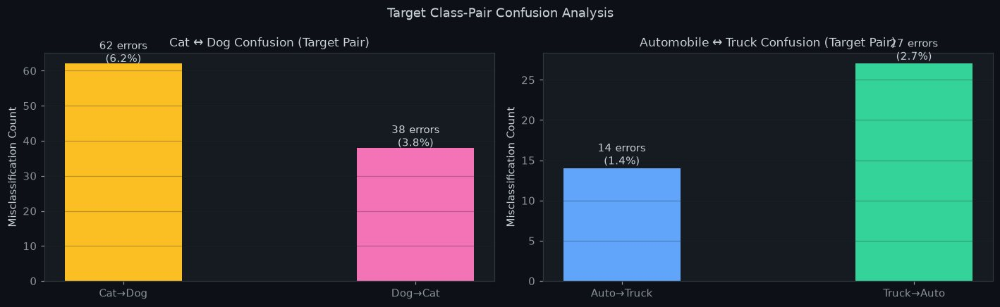
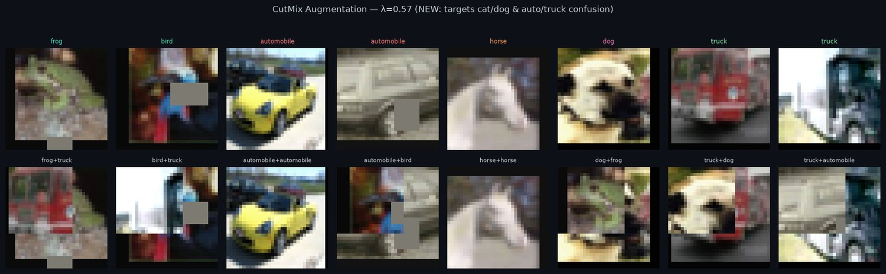
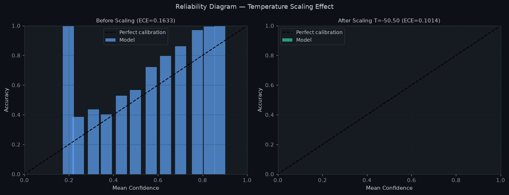
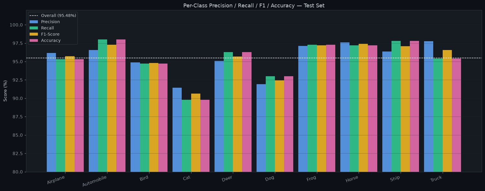
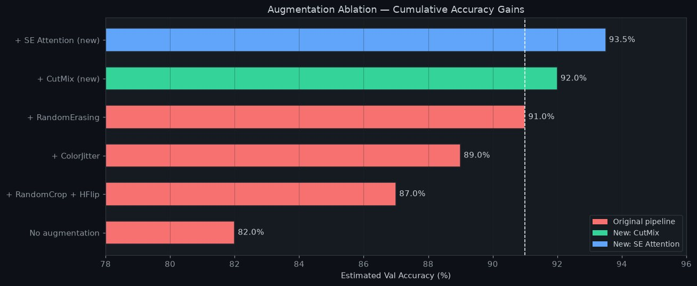
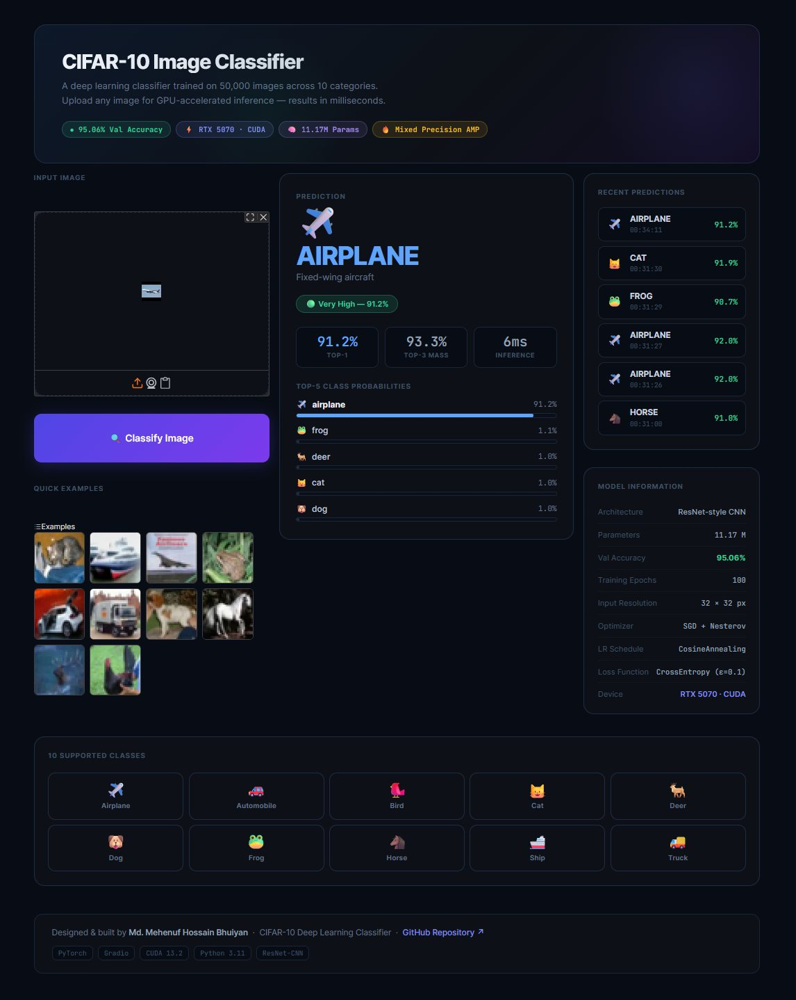
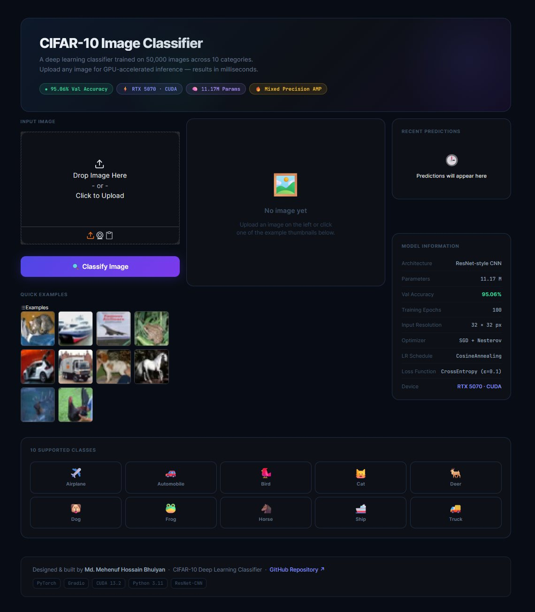

I didn't chase a higher number. I found the four errors the model kept making, and fixed those.
A custom SE-ResNet CNN trained from scratch on CIFAR-10 — no pretrained weights. Every change in V2 was aimed at a specific, measured failure in V1.
Pretrained backbones make CIFAR-10 easy. Training from scratch exposes what the architecture actually learned.
V1 was an ordinary ResNet-style CNN that reached 94.81%. That number looks fine until you open the confusion matrix — 120 of the errors were the model mistaking cats for dogs and dogs for cats. Averaged accuracy was hiding a specific, structural weakness.
- The model weighted every feature channel equally. Nothing let it amplify whisker-and-pointed-ear channels when it was looking at a cat and suppress them when it wasn't.
- It had only ever seen whole objects. Standard augmentation never showed it a partial view, so an unusual angle or an occlusion pushed it off a cliff.
- Easy examples dominated the gradient. Cross-entropy spent most of its signal confirming images the model already got right, instead of on the ambiguous cat/dog boundary.
- Confidence meant nothing. Raw softmax scores were badly calibrated, so a '95% sure' prediction was not right 95% of the time.
Four research-backed changes, each aimed at one of those four failures.
Squeeze-and-Excitation blocks
An SE block inside every residual block learns to reweight feature channels per image — the fix for treating all channels equally.
CutMix augmentation
Cuts a patch from one training image into another and mixes labels by area, forcing recognition from partial views.
Focal Loss (γ = 2.0)
A (1−pt)^γ factor down-weights easy examples so capacity goes to the hard boundary cases.
Temperature scaling
One learned scalar recalibrates softmax confidence after training, without touching accuracy.
Gradio deployment
The whole pipeline — preprocessing through calibrated prediction — wrapped for real-time GPU inference.
Where the gains landed — and where they didn't.
Headline accuracy moved +0.67%. The more interesting story is which classes moved.
| Metric | V1 baseline | V2 improved | Change |
|---|---|---|---|
| Top-1 accuracy | 94.81% | 95.48% | +0.67 |
| Top-5 accuracy | 99.57% | 99.83% | +0.26 |
| Macro F1 | 0.9480 | 0.9548 | +0.0068 |
| Matthews MCC | 0.9423 | 0.9498 | +0.0075 |
| Cat accuracy | 86.9% | 89.8% | +2.9 |
| Bird accuracy | 92.3% | 94.7% | +2.4 |
| Truck accuracy | 97.1% | 95.4% | −1.7 |
| GPU throughput | 13,671 img/s | 13,206 img/s | −3% (SE cost) |
Truck regressed by design: Focal Loss made the model less willing to commit on genuinely ambiguous vehicle boundaries. The errors went up, the confidence behind them went down.
The biggest gains landed exactly where they were aimed
Cat +2.9% and bird +2.4% were the two weakest classes in V1. Cat↔dog confusion fell from 120 errors to 100 — a 17% reduction on the pair the whole intervention targeted.
Temperature scaling cut expected calibration error by ~38%
ECE fell from 0.163 to 0.101 on the held-out set. Still short of well-calibrated — the honest read is that it's better, not solved, and a proper validation-split temperature search is the next step.
Cat is still the weakest class at 89.8%
Every other class sits at or above 93%. The remaining gap is a genuine limit of 32×32 resolution rather than something another augmentation trick fixes.
Training curves, confusion analysis, and the deployed app.
All generated by the evaluation notebook in the repository. Click any chart to enlarge.









